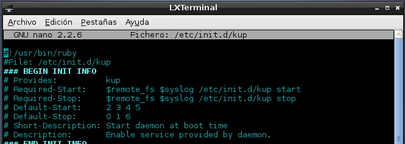

- Módulo: Sistemas Operativos
- Título del trabajo Crear un servicio
- Componentes del grupo: Eliot Farrais García
- Curso Académico: 2014/2015
- Fecha de entrega: 23 de septiembre de 2014
Creamos el Script y lo mentemos en /usr/local/bin/kupd

Damos permisos de ejecución con el comando chmod 777
Instalamos Ruby
Creamos el directorio /etc/kup con el comando mkdir
Ejecutamos el Script y comprobamos que funciona haciendo cat en el archivo cat /etc/kup/kup.log
Lo paramos ejecutando el comando rm /etc/kup/running

Creamos el archivo en /etc/init.d/kup

Damos permisos de ejecución con el comando chmod 777

Probamos que funciona mediante el uso de Start|Stop|Status

Miramos nuestro runlvel, que suele ser el Nº2
Creamos un enlace simbolico en /etc/rc2.d con el nombre S99kup

damos permisos de ejecución en /etc/rc2.d

Modificamos el Script para que se pueda arrancar sin problemas
Vemos que se nos ejecuta sin problemas al iniciar el sistema